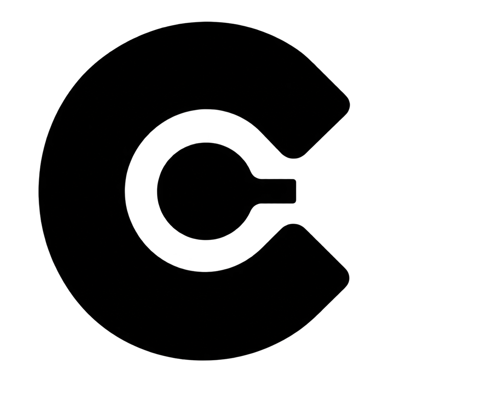
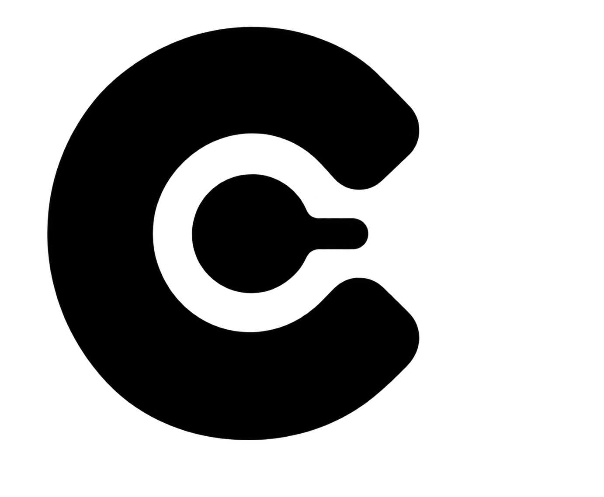

112Split · subtle
Small rounding on the pointed opening.
Codealong / Softer openings / 112–115
Same two marks, with two levels of corner rounding.
Small rounding on the pointed opening.
Broader curves at the right opening.

A gentle radius on the outer tips.

Rounder ends and a softened line tip.